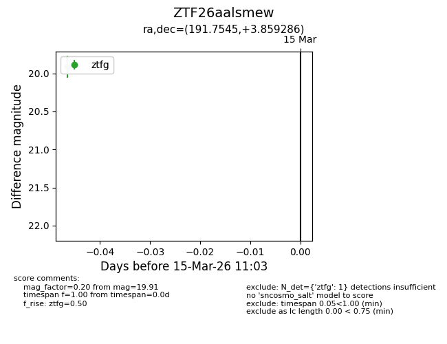
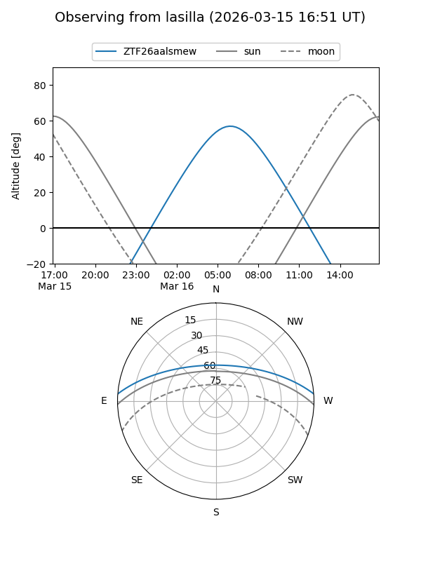
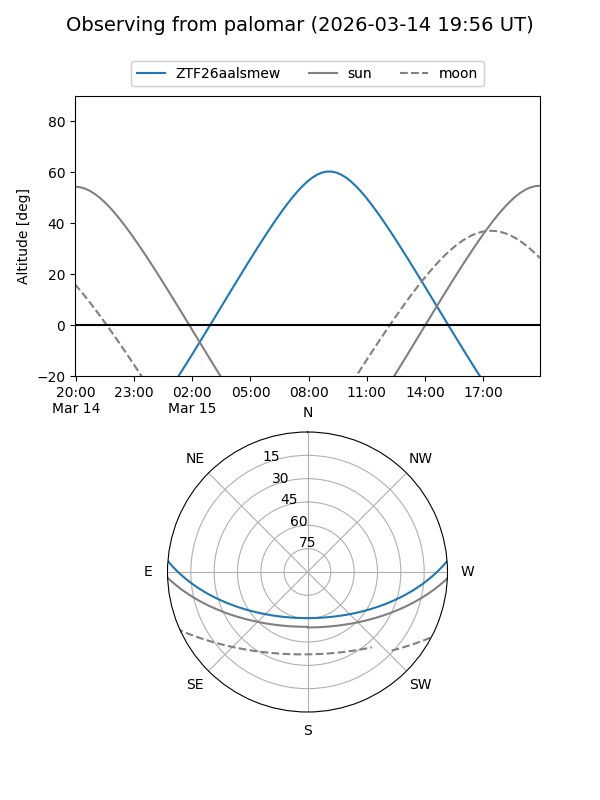

ZTF26aalsmew
Target ZTF26aalsmew at 2026-03-15 11:05
Aliases and brokers:
FINK: link
Lasair: link
ALeRCE: link
alt names
ZTF26aalsmew (ztf,fink_ztf)
Coordinates:
equatorial (ra, dec) = 191.7545,+3.85929
equatorial (HMS+DMS) = 12:47:01.07,+03:51:33.43
galactic (l, b) = (300.1429,+66.70709)
Flags:
Photometry:
last ztfg=19.91
1 ztfg detections
Lightcurve

Visibility


Additional plots